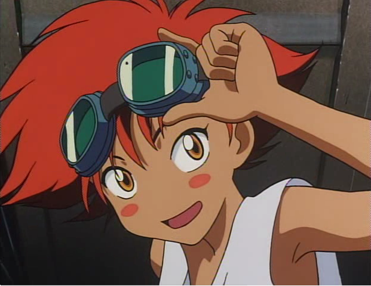

- 
Cowboy Bebop (Japanese: カウボーイビバップ, Hepburn: Kaubōi Bibappu) is a Japanese science fiction anime[13] television series animated by Sunrise featuring a production team led by director Shinichirō Watanabe, screenwriter Keiko Nobumoto, character designer Toshihiro Kawamoto, mechanical designer Kimitoshi Yamane, and composer Yoko Kanno. The twenty-six episodes ("sessions") of the series are set in the year 2071, and follow the lives of a bounty hunter crew traveling in their spaceship called the Bebop. Although it covers a wide range of genres throughout its run, Cowboy Bebop draws most heavily from science fiction, western and noir films, and its most recurring thematic focal points include adult existential ennui, loneliness and the difficulties of trying to escape one's past. The series premiered in Japan on TV Tokyo from April 3 until June 26, 1998, broadcasting only twelve episodes and a special due to its controversial adult-themed content. The entire twenty-six episodes of the series were later broadcast on Wowow from October 24 until April 24, 1999. The anime was adapted into two manga series which were serialized in Kadokawa Shoten's Asuka Fantasy DX. A film was later released to theaters worldwide. The anime series was dubbed in the English language by Animaze and ZRO Limit Productions, and was licensed by Bandai Entertainment in North America and is now licensed by Funimation. In Britain, it was licensed by Beez Entertainment and is currently licensed by Anime Limited. Madman Entertainment has licensed it for releases in Australia and New Zealand. In 2001, Cowboy Bebop became the first anime title to be broadcast on Adult Swim in the United States.